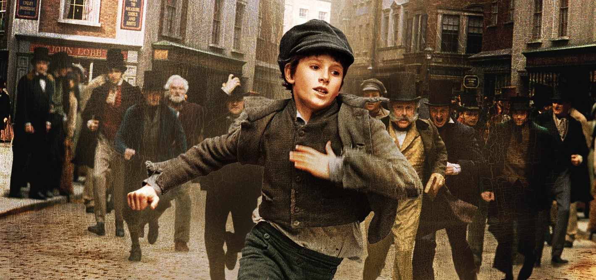

Oliver Twist
by
Charles Dickens
Release Date: November, 1996
Language: English
CONTENTS
- TREATS OF THE PLACE WHERE OLIVER TWIST WAS BORN AND OF THE
CIRCUMSTANCES ATTENDING HIS BIRTH
- TREATS OF OLIVER TWIST’S GROWTH, EDUCATION, AND BOARD
- OLIVER, BEING OFFERED ANOTHER PLACE, MAKES HIS FIRST ENTRY
INTO PUBLIC LIFE
- OLIVER WALKS TO LONDON. HE ENCOUNTERS ON THE ROAD A STRANGE
SORT OF YOUNG GENTLEMAN
- TREATS OF MR. FANG THE POLICE MAGISTRATE; AND FURNISHES A
SLIGHT SPECIMEN OF HIS MODE OF ADMINISTERING JUSTICE
- IN WHICH A NOTABLE PLAN IS DISCUSSED AND DETERMINED ON
- WHEREIN OLIVER IS DELIVERED OVER TO MR. WILLIAM SIKES
- THE EXPEDITION
- THE BURGLARY
- TREATS ON A VERY POOR SUBJECT OF THE HAPPY LIFE OLIVER BEGAN TO LEAD WITH HIS KIND FRIENDS
- WHEREIN THE HAPPINESS OF OLIVER AND HIS FRIENDS, EXPERIENCES A
SUDDEN CHECK
- IN WHICH THE READER MAY PERCEIVE A CONTRAST, NOT UNCOMMON IN
MATRIMONIAL CASES
- WHEREIN IS SHOWN HOW THE ARTFUL DODGER GOT INTO TROUBLE
- THE TIME ARRIVES FOR NANCY TO REDEEM HER PLEDGE TO ROSE
MAYLIE. SHE FAILS.
- NOAH CLAYPOLE IS EMPLOYED BY FAGIN ON A SECRET MISSION
- THE APPOINTMENT KEPT
- FATAL CONSEQUENCES
- THE FLIGHT OF SIKES
- THE PURSUIT AND ESCAPE
- FAGIN’S LAST NIGHT ALIVE
- AND LAST
ENJOY READING :)